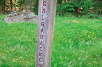

Mellan 1757-1858 fanns en avrättningsplats i utkanten av Komstad. Platsen fick namnet Galgabacken. När någon dömts till avrättning lästes detta upp i häradets kyrkor för alla skulle veta om det. En avrättning lockade stora folkmassor.
Hur många som avrättats här är inte känt men ännu kan man ana den grävda grop där den avhuggnes huvud skulle trilla i.
Den siste som avrättades på galgabacken var Anders Andersson, också kallad Farao. Han dödades för att han hade förgiftat två personer med arsenik.